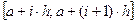

Відокремлення коренів.
Про умови існування кореня рівняння на  говорить відома теорія аналізу.
говорить відома теорія аналізу.
Теорема 1. Якщо функція f (x) неперервна на відрізкові  і набуває на його кінцях значень різних знаків, тобто , то всередині цього відрізка знайдеться хоча б одна точка
і набуває на його кінцях значень різних знаків, тобто , то всередині цього відрізка знайдеться хоча б одна точка  , що .
, що .
Корінь  завідома буде єдиним, якщо перша похідна f (x) існує і зберігає знак всередині інтервалу (а,b).
завідома буде єдиним, якщо перша похідна f (x) існує і зберігає знак всередині інтервалу (а,b).
Корінь рівняння (1) вважається відокремленим на відрізку  , якщо
, якщо 
 і на цьому відрізку дане рівняння не має інших коренів.
і на цьому відрізку дане рівняння не має інших коренів.
Процес відокремлення коренів розпочинається із визначення знаків функції f (x) в межевих точках х = а та х = b області її існування.
Згідно із сказаним вище, процес відокремлення коренів рівняння можна розбити на такі етапи:
- Знайти область визначення рівняння.
- Знайти критичні (підозрілі на екстримальні) точки функції f (x).
- Записати інтервали монотонності функції f (x).
- Визначити знак функції на кінцях інтервалів монотонності.
- Визначити відрізки, на кінцях яких функція f (x) набуває значень протилежних знаків.
Якщо для відокремлення всіх коренів використовується ЕОМ, то варто застосовувати метод послідовного перебору. Із його допомогою можна відокремити усі дійсні корені, окрім кратних (наперед обумовлюємо, що функція f (x) з рівняння (1) задовольняє умовам теореми). Для цього необхідно виконати такі дії:
- Знайти область визначення функції f (x).
- Вибрати достатньо мале число h (крок розбиття).
- Вибрати початкову точку а з області визначення функції f (x).
- Обчислити значення функції f (x) у точках , (і = 0, 1, 2,…).
- Визначити знак функції f (x) на кінцях кожного із відрізків ,
(і = 0,1, 2,…).
6) Відібрати ті із відрізків, на яких виконується нерівність .
Корисно пам’ятати, що алгебраїчне рівняння n-го степеня () має не більше n дійсних коренів. Тому, якщо для такого рівняння ми отримали n+1 зміну знаків, то всі його корені відокремлені.
У подальшому, випадках, нам буде потрібним існування першої і навіть другої похідної функції f (x) (це буде обумовлено додатково).